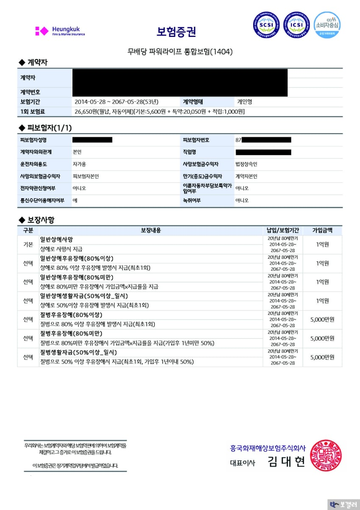
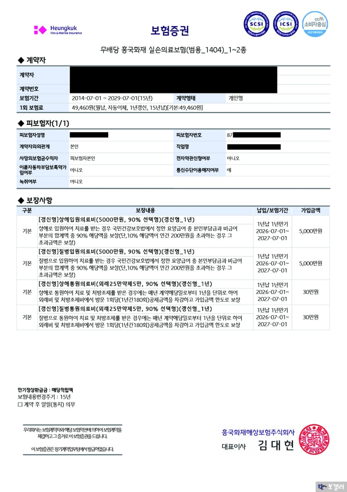
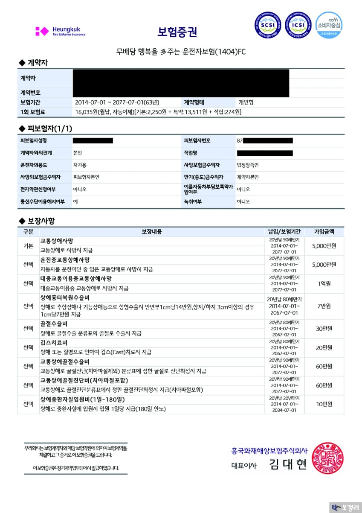
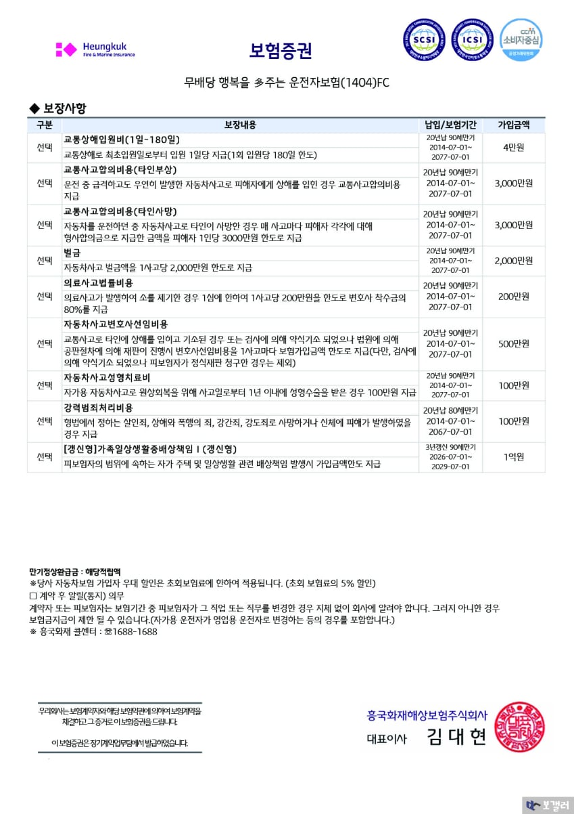
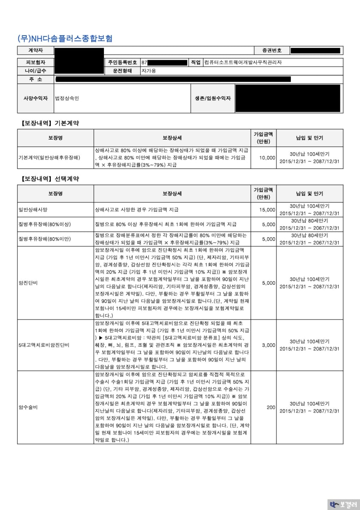
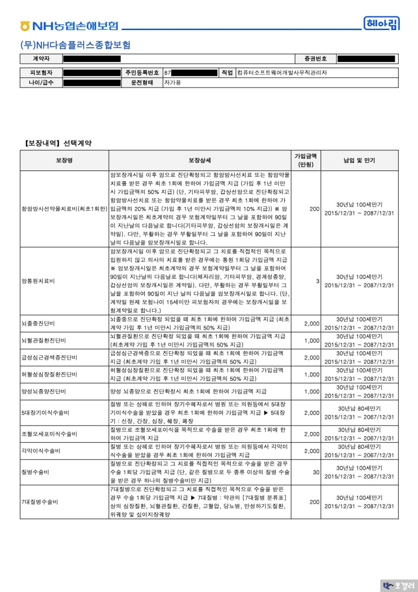
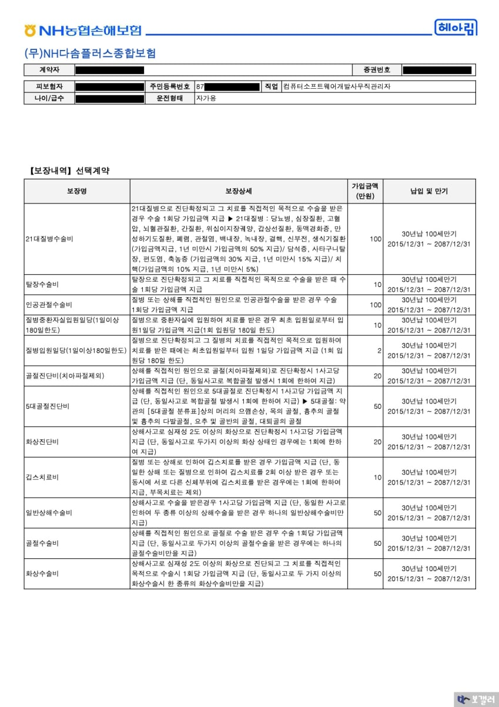
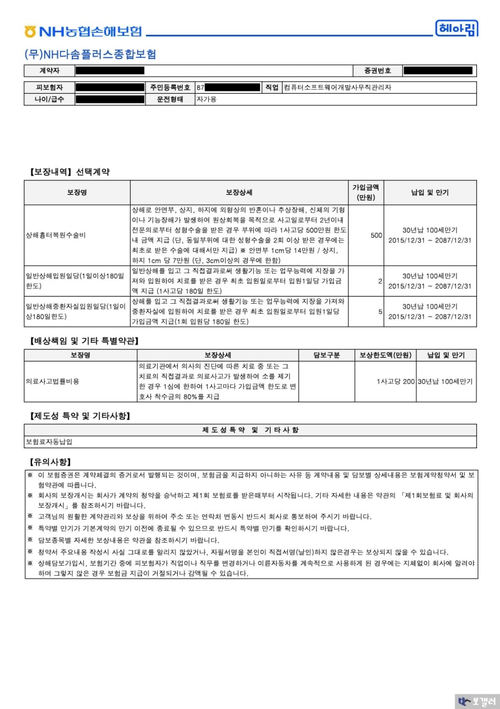

학생 때 어머니가 가입해주신 보험을 쭉 유지중인 보험알못 뉴비야
월 20만원정도 내고 있는데 생각보다 보험이 약한거 같아서 전문가 형님들한테 문의좀 할게
현재 보험이 약해서 리모델링을 할까 하는데 싹다 해지하고 새로 가입하는게 나을까?
아니면 지금까지 낸게 유지하고 서브 보험을 추가하는게 맞을까?
가족회사라 보험비만큼 급여가 추가로 나와서 현재 보험을 유지하고 추가하는데에는 부담은 없어
가족력은 큰아버지 고모가 당뇨에 걸리신거 말고는 없고
나는 흡연중이며 살면서 입원 한번 한 적 없고 감기도 잘 안걸려서 병원도 2년에 1번정도 가는게 다야








댓글
수집 당시 댓글 27개
보갤러1 · 11.11 15:18:52
DC보험길잡이 · 11.11 15:20:45
· DC보험길잡이 · 11.11 15:20:53
· 보갤러 · 11.11 15:45:19
DC가성비보험 · 11.11 15:20:53
· DC가성비보험 · 11.11 15:21:01
· DC가성비보험 · 11.11 15:21:07
· 보갤러 · 11.11 15:45:42
DC한선생 · 11.11 15:24:54
· DC한선생 · 11.11 15:25:04
· 보갤러 · 11.11 15:44:41
보갤러2 · 11.11 15:27:17
· 보갤러2 · 11.11 15:29:53
보갤러 · 11.11 15:39:47
땨뗘(봇) · 11.11 15:56:08
ㅇㅇ · 11.11 15:57:58
캐피탈리즘 · 11.11 15:58:35
ㅇㅇ · 11.11 15:59:29
ㅇㅇ · 11.11 16:02:28
· ㅇㅇ · 11.11 16:03:05
ㅇㅇ · 11.11 16:02:30
2456778 · 11.11 16:03:09
레인보우 · 11.11 16:03:44
ㅇㅇ · 11.11 16:04:02
ㅇㅇ · 11.11 16:05:54
04T · 11.11 16:12:28
ㅇㅇㅇ · 11.11 16:12:32